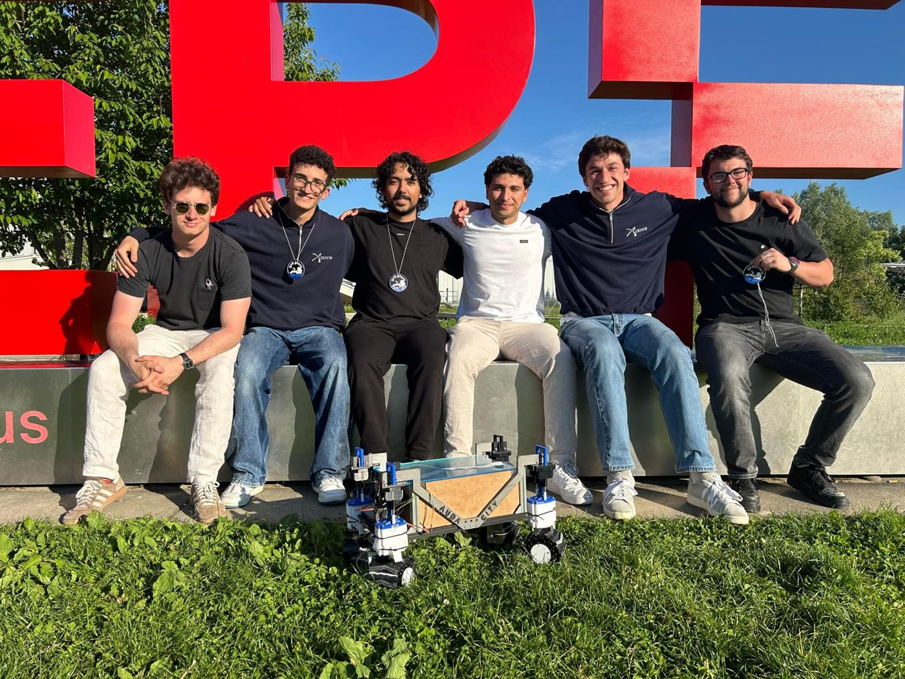
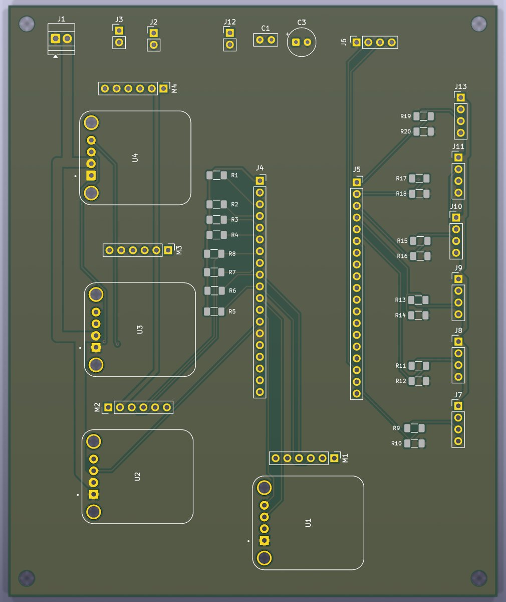
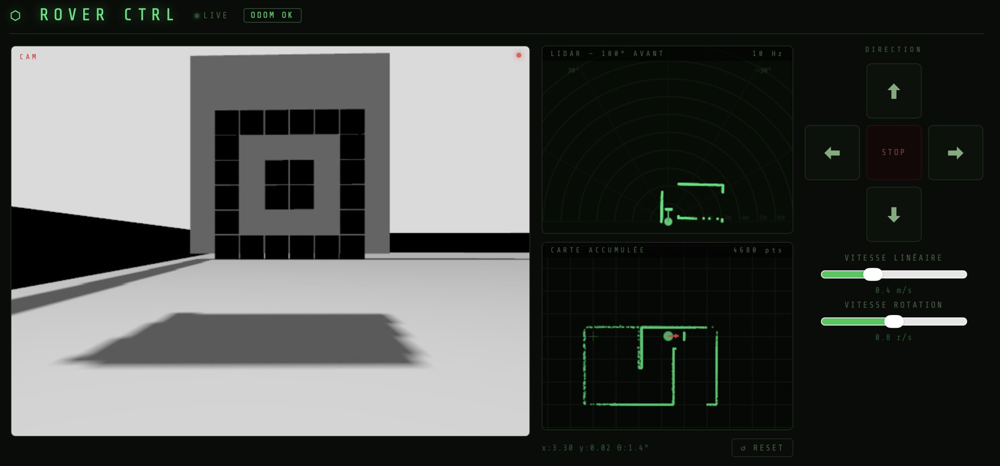

3rd · Xplore Rover ChallengeEPFL Xplore
Autonomous rover with sensor fusion
Custom PCB, full electronics and autonomy stack for a differential-drive rover that finds and approaches a target on its own.
| Hardware | ESP32, 4 DC motors, 5 servos, custom PCB |
|---|---|
| Fusion | IMU + LiDAR + ultrasonic via Extended Kalman Filter |
| Autonomy | HSV detection, LiDAR gap-finding state machine |
| Stack | ROS 2, Gazebo Harmonic, robot_localization |
3rd · Xplore Rover ChallengeEPFL Xplore
Autonomous rover with sensor fusion
A differential-drive rover that finds a target panel on its own, drives to it and avoids obstacles on the way. I did the full electronics, from the custom PCB to sensor integration, and wrote the autonomy software.
My role
- Designed the custom PCB and all of the rover's electronics.
- Integrated the IMU, LiDAR and ultrasonic sensors and fused them with an Extended Kalman Filter.
- Wrote the autonomy stack: simulation, computer vision and the navigation state machine.

How it works
An ESP32 controls the motors and servos, and ROS 2 fuses the IMU, LiDAR and ultrasonic sensors to know where the rover is. A camera detects the target, and the rover plans its way there while avoiding obstacles. Everything was developed in Gazebo simulation first, then moved to the real robot.

Result
Our team finished 3rd at the Xplore Rover Challenge.
Tech
| Hardware | ESP32, Arduino Nano, L298N, 4 DC motors, 5 servos, custom PCB |
|---|---|
| Sensors | MPU6050 IMU (calibrated), LiDAR, ultrasonic |
| Software | ROS 2, Gazebo Harmonic, robot_localization (EKF), OpenCV |